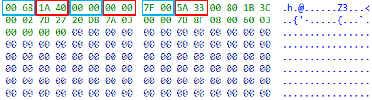

前言
English version is here, thanks for
ecos.wtfteam’s translation.
最近在分析Zyxel 某型号设备时，发现该设备的固件无法采用binwalk等工具进行提取。根据binwalk的提示信息，猜测该设备使用的是eCos实时操作系统，其固件是一个单一大文件。由于不知道其加载地址，在使用IDA等工具进行分析时，无法建立正确的交叉引用，直接逆向会比较麻烦。而网上与eCos固件分析相关的资料不多，在没有相关的芯片文档或SDK手册等资料的前提下，从该固件本身出发，通过对固件进行简单分析，寻找固件中引用的固定地址，最终确定了该固件的加载地址。
binwalk分析
首先使用binwalk工具对固件进行分析，如下。尝试使用-e选项进行提取时失败，说明该固件可能就是一个单一大文件。从输出中可以看到很多与eCos相关的字符串，其中"eCos kernel exception handler, architecture: MIPSEL, exception vector table base address: 0x80000200"指出了该文件的架构(MIPSEL)和异常向量表基地址(0x80000200)。
1 | binwalk RGS200-12P.bin |
尝试使用IDA工具直接加载该文件，设置架构为mipsel、加载地址为0x80000200后，如下。可以看到没有识别出一个函数，整个segment都是Unexplored状态，估计是因为加载地址不正确，因此需要想办法获取固件的加载地址。
一般，判断加载地址是否正确的方式包括：1) 成功识别出的函数个数；2）正确的字符串交叉引用个数。
后来发现即使加载基址正确，初始状态也是这样，需要在对应的地方手动
Make Code才行 。。。可能还需要有合适的loader 进行初始化 ??? 相比而言，Ghidra就可以自动进行分析。
根据相关信息进行查找，文章ecos vector.S 分析II中简单介绍了eCos异常中断的初始化及处理等知识，如下，尝试其中提到的地址0x80000180似乎不对。
1 | # mips cpu 产生exception/interrupt后，cpu会跳到特定的几个地址上, |
在MLT linker文件mips_tx49.ld中提到了hal_vsr_table和hal_virtual_vector_table等地址，搜索SECTION_rom_vectors (rom，尝试找到的一些地址后仍然不对。
1 | // MLT linker script for MIPS TX49 |
bare-metal firmware加载地址分析
一般来说，针对bare-metal firmware，为了确定其加载地址，可以通过查询对应的芯片文档或SDK手册等资料，得到内存空间的映射分布。示例如下，其中Flash memory的范围为0x08000000~0x0801FFFF。
来源: STM32F103C8 memory mapping
此外，对于一些ARM架构的bare-metal firmware，还可以通过中断向量表来推测加载地址。中断向量表中的前2项内容分别为Initial SP value和Reset，其中Reset为reset routine的地址，设备上电/重置时将会从这里开始执行，根据该地址推测可能的加载地址。
In the used cores, an ARM Cortex-M3, the boot process is build around the reset exception. At device boot or reboot the core assumes the vector table at
0x0000.0000. The vector table contains exception routines and the initial value of the stack pointer. On power-on now the microcontroller first loads the initial stack pointer from0x0000.0000and then address of the reset vector (0x0000.0004) into the program counter register (R15). The execution continues at this address. (来源)
来源：ARM Cortex-M3 Vector table
在没有对应的芯片文档或SDK手册等资料时，可以尝试从固件本身出发，通过分析固件中的一些特征来推测可能的加载地址。例如，Magpie通过识别ARM固件中的函数入口表，然后基于函数入口表中的地址去推测可能的加载基址；limkopi.me通过查找指令中引用的固定地址，成功试出了该eCos固件的加载地址。上述方法的本质都是查找固件中存在的固定地址(绝对地址)，因为即使加载地址不正确，引用的这些固定地址也不会改变。下面尝试通过同样的方法来对Zyxel RGS200-12P设备的固件进行分析。
由于该固件是
MIPS架构的，而Magpie的工具是针对ARM架构的，因此并未直接尝试该工具。
eCos固件加载地址分析
前面使用binwalk工具进行分析时，其输出结果中包含"eCos kernel exception handler, architecture: MIPSEL, exception vector table base address: 0x80000200"。通过查看binwalk中ecos对应的magic，如下，表明binwalk在该固件中匹配到一些模式。
1 | # eCos kernel exception handlers |
使用IDA工具加载该文件，设置架构为mipsl、加载地址为0x80000000，在最开始处Make Code后，看到了熟悉的eCos kernel exception handler，同时其中包含一个固定地址为0x80000200。由于该固件文件有点大(约10M)，仅靠单个地址去猜测加载地址比较费事：(1) 一次完整的分析比较耗时(大概几分钟)，猜测多个地址的话需要分析好几次；(2) 手动去确认识别出的函数以及字符串交叉引用是否正确也比较麻烦(可能包含成百上千个函数及字符串交叉引用)。因此还需要查找更多的固定地址以及更有规律的地址，来确定加载地址的区间。
由于对
eCos系统不了解，刚开始以为加载地址可能在0x80000000~0x80000200之间 :(，后来发现不对。
1 | ROM:80000000 # Segment type: Pure code |
在Hex View窗口中快速浏览固件时，发现了一些有规律的内容，如下。其中，存在一些连续的内容(以4字节为单位)，其最后2个字节均相同，对应到IDA View窗口中，分别为指向代码片段的地址和指向字符串的地址。由于此时加载地址不正确，故看到的字符串引用比较奇怪。
当然，文件中还存在一些其他的规律，比如以8字节为单位，以16字节为单位等等。
根据上述规律可以从固件文件中提取出所有的固定地址，一方面可以缩小加载地址所在的范围，另一方面可以利用这些固定地址去判断尝试的加载地址是否正确。Magpie根据代码片段地址引用处是否是函数的序言指令来判断加载地址是否正确，由于函数的序言指令需要考虑多种情况，这里采用另一种简单的方式：根据字符串交叉引用是否正确来进行判断。
针对该eCos固件，确定其加载地址的方法如下：
(1) 以4字节为单位，判断邻近内容的低/高2字节是否相同，提取固件中所有符合规律的固定地址。考虑到大小端差异，在实际比较时以2字节为单位，判断相邻浅蓝色框(或红色框)内的内容是否相同。
(2) 提取出所有的固定地址后，先筛掉不合法的地址，然后对剩下的地址进行排序，排序后的结果中的第一个地址为加载地址的上限。同时，排序后的结果中前半部分为指向代码片段的地址，后半部分为指向字符串的地址。从中选择一个地址，将指向字符串的地址和指向代码的地址分开。之后，随机从字符串地址列表中选取一定数量的地址，作为后续判断的依据。
模糊的正确，只需要保证分到字符串地址列表中的地址均正确即可，因此可以尽量从列表后半部分取，至于是否有字符串引用地址分到了代码片段引用地址列表中不重要。
(3) 在确定的加载地址范围内逐步进行尝试，同时针对每个尝试的加载地址，判断之前选取的每个字符串引用地址指向的字符串是否”正确”，并记录下正确的个数。对应字符串地址”命中”最多的那个加载地址，很有可能就是正确的加载地址。
判断字符串引用地址是否正确，可根据该地址是否指向完整字符串的开头判断，即对应地址处的前一个字节是否为
'\x00'。当然，也存在一些字符串引用地址指向某个完整字符串的中间(“字符串复用”)，但大部分的地址还是指向完整字符串的开头。
根据上述思路，推测出了该eCos固件的加载地址为0x80040000。通过分析部分函数逻辑和字符串交叉引用，验证该加载地址是正确的。另外，采用该方法对另外几个eCos固件(包括其他厂商的)进行分析，也可以得出正确的加载地址，说明该方法是可行的。当然，该方法还存在可以改进或优化的地方，不过目前暂时够用了。
1 | python find_ecos_load_addr.py |
binwalk magic添加
设置正确的加载地址后，在对文件进行分析时，在文件头部发现与VSR table初始化相关的代码，如下。
1 | .text:80040118 li $gp, 0x809A1140 |
参考文章ecos vector.S 分析II中对eCos异常中断的初始化及处理的介绍，对照上述代码可知，0x80000200为hal_vsr_table的地址，而0x80040224则为__default_exception_vsr的地址。根据前面推测出的加载地址0x80040000，猜测该地址与__default_exception_vsr有关，即根据__default_exception_vsr的地址，考虑地址对齐，可以推测出对应的加载地址。
1 | # mips cpu 产生exception/interrupt后，cpu 会跳到特定的几个地址上, |
根据上述代码特征，通过在binwalk中添加对应的eCos magic，再次对文件进行分析时即可匹配对应的代码模式，输出__default_exception_vsr地址信息，如下，根据该信息即可推测出对应的加载地址。
利用
binwalk对另外几个eCos固件(包括其他厂商的)进行分析，也可以输出相关的信息，推测出对应的加载地址。
1 | binwalk RGS200-12P.bin |
其他
自动分析
使用IDA加载该固件并设置正确的架构、加载地址等参数后，默认情况下IDA不会自动进行分析。相比而言，Ghidra则可以自动进行分析，成功识别出函数并建立字符串的交叉引用。因此，一种方式是对照Ghidra分析的结果，在IDA中进行部分手动Make Code (当然，也可以直接使用Ghidra … )；另一种方式是写一个简单的eCos loader插件，然后IDA就可以自动进行分析了。
函数名恢复
该单一大文件中不存在导入表及导出表，故无法区分哪些是常见的系统函数，比如memcpy(), strcpy()等。但也有其好处，在代码中存在很多函数名/日志等信息，根据这些信息可以很容易地对函数名进行恢复。
函数调用约定
对于MIPS32架构的程序，常见的函数调用约定遵循O32 ABI，即$a0-$a3寄存器用于函数参数传递，多余的参数通过栈进行传递，返回值保存在$v0-$v1寄存器中。而该eCos固件则遵循N32 ABI，最大的不同在于$a0-$a7寄存器用于函数参数传递(对应O32 ABI中的$a0-$a3, $t0-$t3)。
IDA中支持更改处理器选项中的ABI模式，但仅修改该参数似乎不起作用。默认情况下"Compiler"是"Unknown"，将其修改为"GNU C++"，同时修改ABI为n32，之后反编译代码中函数参数的显示就正常了。
小结
本文通过对Zyxel某设备eCos固件进行分析，寻找固件中引用的固定地址，给出了推测固件加载地址的思路，根据该思路成功得到了固件的加载地址。同时，通过对文件进行分析，在文件中发现了与VSR table初始化相关的代码，根据该代码可以反推出固件的加载地址，并在binwalk中添加对应的eCos magic来自动匹配该模式。
脚本见 find_ecos_load_addr.py
相关链接
- ecos vector.S 分析II: exception/interrupt
- Starting Embedded Reverse Engineering: FreeRTOS, libopencm3 on STM32F103C8T6
- Magpie: ARM固件基址定位工具开发
- limkopi.me: Analysing SJ4000’s firmware
- MIPS calling conventions
本文首发于安全客，文章链接：https://www.anquanke.com/post/id/233361